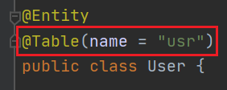

1) Войти или зарегистрироваться
2) Перейти в раздел My projects
3) Нажать на кнопку Create project
4) В поле Name ввести название Вашего проекта латинскими буквами без пробелов
5) В поле Group Id ввести адрес любого домена в обратном порядке слов
6) В поле Model ввести название модели данных, которыми Вы будете управлять, латинскими буквами без пробелов
P.S. Чтобы не возникло проблем с пространством имен SQL, в полученном исходном коде можно будет добавить следующую строку:
7) Добавить переменные, нажимая на кнопку +
8) Нажать на кнопку Save
9) В списке проектов выбрать нужный проект и нажать на кнопку, на которой изображён глаз
10) Нажать на кнопку Generate
11) Нажать на кнопку Download
12) Распаковать скачанный архив
13) Открыть главную папку с помощью IDE
14) Собрать проект
15) Подключить базу данных PostgreSQL
16) Ввести свои данные в файле application.properties
17) Запустить проект
18) Открыть браузер и перейти на сайт localhost:8080
19) Наслаждаться полученным результатом
20) Вернуться на сайт DeveloperHelper и нажать на кнопку Donate